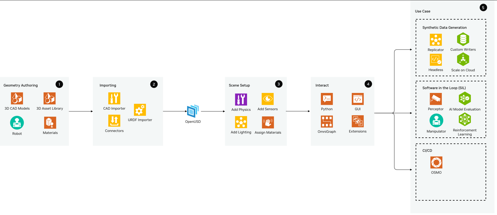
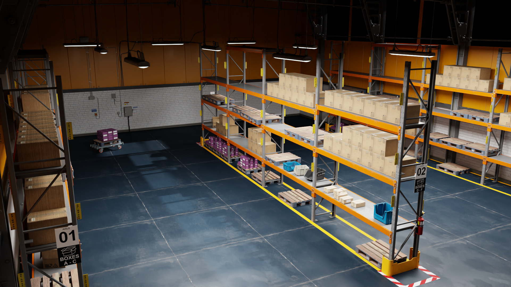
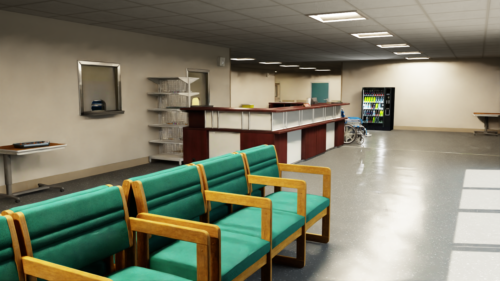
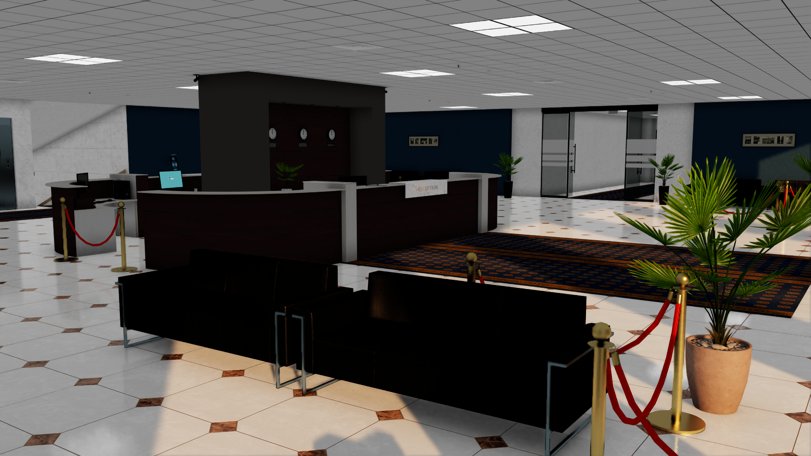
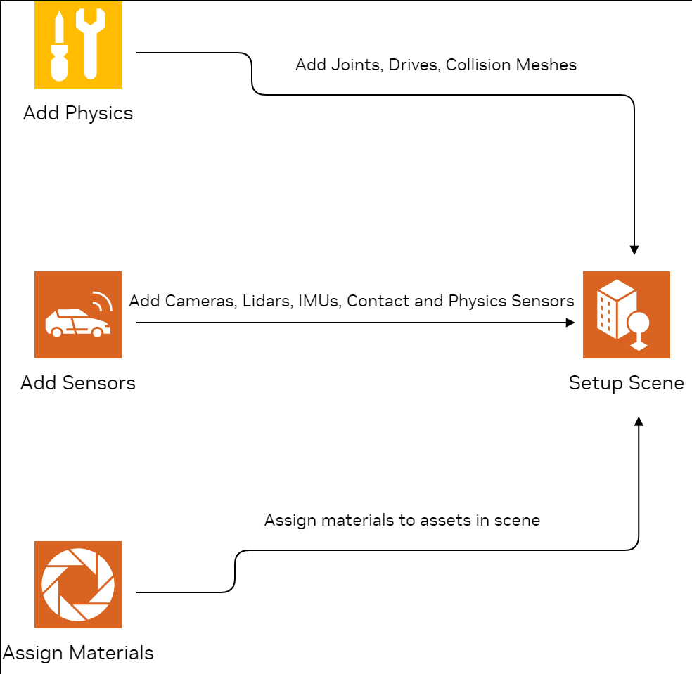
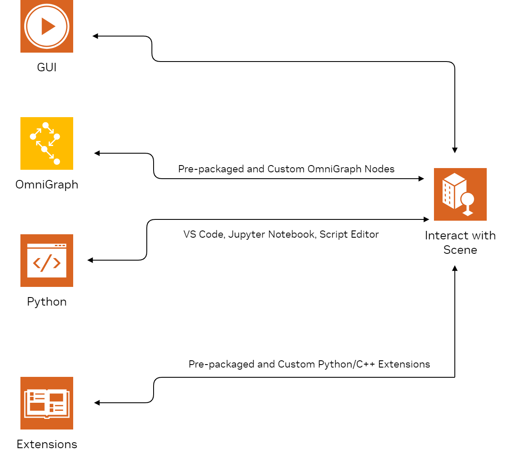
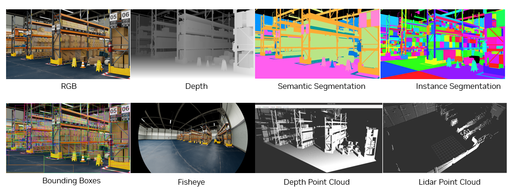

Reference Architecture and Task Groupings#
Isaac Sim은 일반적으로 더 큰 솔루션의 일부로 설치 및 사용됩니다. 사용 사례와 요구 사항에 따라 이 문서는 참조 아키텍처를 제공합니다. 거의 모든 사용 사례에는 공통점이 있으며, 아래 다이어그램에서 태스크 그룹화로 강조 표시됩니다. 각 태스크 그룹화 내에서 제품 아키텍처는 나열된 제품 또는 컴포넌트 중 하나 이상을 포함할 수 있습니다.
제품 컴포넌트에 관계없이, 대부분의 Isaac Sim 사용 사례는 대략 동일한 순서로 발생하는 다음과 같은 고수준 태스크 그룹화를 포함합니다:
1. Geometry Authoring
2. Importing Assets
4. Interaction with the Digital Twin
5. Use Cases
일반적인 사용 사례는 Use Cases에 요약되어 있습니다.
{kind=link}

{kind=link}
{kind=link}
{kind=link}
{kind=link}
Importing Assets#
Isaac Sim으로 CAD(컴퓨터 보조 설계) 파일을 가져와 OpenUSD로 변환을 처리하는 확장 기능이 있습니다. 확장 기능은 Isaac Sim의 기능과 상호 작용하고 추가하거나 확장하는 핵심 빌딩 블록입니다.
Importing and Creating Environments#
asset importer는 OBJ, FBX, glTF 형식을 가져오는 데 사용할 수 있습니다. CAD converter 확장 기능은 Catia, Solidworks, AutoCad, Creo를 포함한 애플리케이션의 다양한 인기 CAD 파일을 지원합니다. 이를 통해 환경을 Isaac Sim으로 빠르게 변환하고 가져올 수 있습니다.
OpenUSD Connections and Data Exchange(이전 Omniverse Connect)는 다양한 3D 애플리케이션, 제품, 파일 형식이 OpenUSD를 사용하여 데이터를 교환할 수 있게 하는 importers, exporters, converters, USD file format 플러그인 모음입니다.
일부 CAD 애플리케이션은 Omniverse와의 커넥터가 있어 USD로 변환할 때 더 관련성 있고 맥락적인 정보를 가져올 수 있습니다. 예를 들어 PTC Creo, Autodesk Revit 또는 Autodesk Alias에는 해당 커넥터가 있습니다. 이러한 CAD 컨버터로 생성된 파일은 OpenUSD에 표현된 모든 시각적 메시를 갖습니다.
{kind=link}

{kind=link}

{kind=link}

Importing Robots#
Isaac Sim에는 이미 가져온 다양한 로봇이 포함되어 있습니다. 사전 가져온 로봇은 Robot Assets 페이지에서 찾을 수 있습니다. Isaac Sim은 다른 로봇을 가져오기 위한 고급 옵션도 제공합니다.
로봇이 URDF 형식인 경우, GUI나 Python에서 URDF Importer Extension을 사용할 수 있습니다. 이 확장 기능은 시각적 메시와 prim 계층(자식-부모 관계)을 가져오며, 충돌 메시, 관절, 센서가 인코딩되는 방법에 대한 추가 정보도 가져옵니다.
Onshape Importer와 MJCF Importer Extension도 사용할 수 있습니다. 이 임포터를 사용하면 관절 드라이브를 추가하고 튜닝해야 할 수 있습니다. Gain Tuner Extension을 사용하면 관절을 시각화하고 튜닝할 수 있습니다.
Scene Setup#
필요한 모든 에셋이 OpenUSD로 변환되고 Isaac Sim에 가져온 후 씬을 설정할 수 있습니다.
실제 세계 상황을 올바르게 시뮬레이션하려면 물리 특성이 정의되어 있어야 합니다. 예를 들어, 물리 특성은 객체가 중력의 영향을 받는지 또는 얼마나 단단한지를 정의합니다.
{kind=link}

Adding Physics#
필요한 에셋을 Isaac Sim에 가져온 후 정확한 시뮬레이션을 위해 적절한 물리가 있는지 확인합니다. URDF 및 Onshape Importer와 같은 일부 에셋 임포터는 대부분의 물리 매개변수와 구성을 가져오지만, 나머지 가져온 에셋의 경우 진행하기 전에 물리를 추가하는 것이 필요합니다. NVIDIA Omniverse™ Physics simulation extension은 NVIDIA PhysX SDK로 구동됩니다. 강체 시뮬레이션, 캐릭터 제어, 변형 가능 바디 시뮬레이션, 입자 시뮬레이션, 관절형 구조를 지원합니다. 씬에 물리를 추가하는 중요한 단계는 다음과 같습니다:
물리 씬 생성
충돌 설정 할당
관절 및 드라이브 추가.
Creating the Physics Scene#
첫 번째 단계는 물리 씬을 생성하고 기본 매개변수가 적절한지 확인하는 것입니다. 예를 들어 씬에서 중력의 방향과 크기를 확인합니다. 가져온 씬에 지면 평면이 없다면 진행하기 전에 추가해야 합니다. 이는 물리가 활성화된 객체가 그 아래로 떨어지는 것을 방지합니다. 수백 개의 강체와 로봇을 시뮬레이션하지 않는 한 GPU 솔버 대신 CPU 솔버를 사용하는 것이 더 효율적입니다. Tutorial 1: Stage Setup 튜토리얼 참조
Assigning Collision Settings#
Collision은 강체가 환경에서 서로 상호 작용할 수 있게 합니다. 객체의 기하는 볼록 껍질, 볼록 분해, 경계 구, 경계 박스, SDF 충돌 메시로 근사할 수 있습니다. 각 방법은 다른 기하 근사 방법을 사용하며 특정 사용 사례에 더 적합할 수 있습니다. PhysX는 Cube, Capsule, Sphere 형상에 대한 정확한 표현을 지원합니다. Cone 및 Cylinder는 커스텀 기하 플래그를 통해 지원되며 로봇 바퀴의 충돌 근사 설정에 특히 유용합니다. Rigid-body physics materials는 마찰, 반발(a.k.a. '탄성'), 재료 밀도 속성을 제공합니다
Adding Joints and Drives#
씬의 prim에 적절한 충돌 메시를 추가한 후, 서로 올바르게 상호 작용하는지 확인해야 합니다. 이는 서로 연결된 prim 간에 적절한 관절을 정의하여 수행할 수 있습니다. 관절은 객체가 서로 상대적으로 어떻게 이동할 수 있는지를 정의하여 물리 객체를 연결하는 능력을 제공합니다. 회전, 프리즘, 구형, 고정 등을 포함한 다양한 관절 유형을 선택할 수 있습니다.
Adding Sensors#
Isaac Sim 센서 시뮬레이션 확장 기능은 그라운드 트루스 인식 및 물리 기반 센서를 시뮬레이션할 수 있으며 실제적인 센서 모델 라이브러리를 갖추고 있습니다. 카메라, 라이다, 레이더, 물리 기반 센서를 시뮬레이션할 수 있습니다. OpenCV 또는 ROS에서 얻은 카메라 캘리브레이션 매개변수를 Isaac Sim 단위로 변환하여 사용할 수 있습니다. Camera Sensors 페이지를 참조하세요. RTX Lidar 및 Radar 센서는 RTX 하드웨어로 GPU에서 렌더 시간에 시뮬레이션됩니다. 접촉 센서, IMU 센서, 힘 센서, 토크 센서, 근접 센서와 같은 다양한 물리 기반 센서도 포함됩니다. 이 센서들은 스테이지 계층의 적절한 위치에 추가할 수 있습니다(예: 카메라나 라이다는 로봇의 앞/상단 근처에 추가). Camera and Depth Sensors와 Non-Visual Sensors 페이지는 Isaac Sim에서 사용 가능한 모든 물리적 센서 에셋을 강조합니다
Import and Create Materials#
Isaac Sim의 Materials는 컴퓨터 그래픽스에서 재료의 외관을 정의하고 설명하기 위해 설계된 쉐이딩 언어인 NVIDIA Material Definition Language (MDL)을 사용하여 지원됩니다. 아티스트와 개발자는 물리적 속성, 표면 특성, 빛과의 상호 작용 방식을 지정하여 매우 사실적인 재료를 만들 수 있습니다. Omniverse에는 물리 기반 유리, 유전체 및 비유전체 재료, 피부, 머리카락, 액체 및 산란 또는 투과 효과가 필요한 기타 재료에 유용한 범용 다중 로브 재료, USD의 UsdPreviewSurface를 포함한 여러 템플릿 재료가 제공됩니다.
Interaction with Digital Twin#
에셋을 가져오고 씬을 설정한 후, 시뮬레이션 환경과 상호 작용하는 다양한 방법이 있으며, 아래에 요약되어 있습니다.
{kind=link}

GUI#
GUI는 씬 관리, 객체 조작, 실시간 모니터링을 위한 직관적인 컨트롤을 제공하며, 로봇 시스템 개발 및 테스트를 위한 간소화된 인터페이스를 제공합니다. GUI를 통해 사전 패키지된 예제, 로봇 및 환경에 쉽게 접근하고 씬에 추가할 수 있습니다. Create 도구를 사용하면 크고 작은 씬을 쉽게 조립, 조명, 시뮬레이션, 렌더링할 수 있으므로 가상 세계를 구축하고 로봇을 조립하며 물리를 검사하기에 이상적인 장소입니다. GUI 튜토리얼을 시작하려면 GUI Reference를 참조하세요.
Standalone Python#
Isaac Sim은 패키지가 시스템 수준 Python 설치처럼 사용할 수 있는 내장 Python Environment를 제공합니다. 이는 Isaac Sim에서 Python 스크립트를 실행하기 위한 권장 환경입니다. 이 Python 환경을 통해 모든 Isaac Sim 라이브러리와 의존성을 가져오고 접근할 수 있습니다. 또한 전체 워크플로우를 헤드리스로 스크립팅하고 실행할 수 있습니다. Isaac Sim의 일부가 아닌 라이브러리와 도구를 사용하려면 먼저 Python 3.11과 호환되는지 확인합니다. Isaac Sim과 함께 제공되는 독립 실행형 Python 예제 컬렉션은 전반적인 단계를 이해하기 위한 좋은 출발점입니다. Jupyter 노트북 및 Visual Studio Code 지원도 제공됩니다. GUI의 워크플로우는 Python으로 완전히 스크립팅할 수 있으며 헤드리스 모드에서도 실행할 수 있습니다.
Extensions#
확장 기능은 개발자가 Isaac Sim에 기능을 추가하고 다른 도구를 통합할 수 있게 합니다. 개별적으로 빌드된 애플리케이션 모듈입니다. Isaac Sim에서 사용되는 모든 도구는 확장 기능으로 구축됩니다. 다양한 확장 기능은 씬의 센서, 로봇 및 prim과의 상호 작용을 쉽게 합니다. ROS 2 Bridge 확장 기능을 사용하여 ROS 패키지와 코드를 Isaac Sim에 연결할 수 있습니다. 개발자는 C++, Python 또는 둘 다 조합하여 자신만의 확장 기능을 작성할 수 있습니다.
OmniGraph#
OmniGraph는 Omniverse를 위한 비주얼 스크립팅 언어입니다. 단일 유형의 그래프가 아니라 단일 프레임워크 아래 여러 다른 그래프 시스템의 조합입니다. 많은 Isaac Sim 확장 기능은 일반적인 사용 사례를 위한 그래프를 구축하기 위한 노드를 제공합니다. Core, 센서, ROS 확장 기능은 이러한 OmniGraph 노드를 포함하는 몇 가지 예시입니다.
Use Cases#
Synthetic Data Generation (SDG)#
개발자는 Omniverse Replicator를 사용하여 로봇에 사용되는 AI 인식 네트워크의 훈련과 성능을 향상시킬 수 있는 물리적으로 정확한 합성 데이터를 생성할 수 있습니다. Replicator는 합성 데이터 생성 태스크를 가능하게 하는 확장 기능, Python API, 워크플로우, 도구의 모음입니다.
씬이 설정된 후, Replicator를 사용하여 씬에서 에셋의 위치, 회전, 조명, 크기, 텍스처와 같은 다양한 기능을 수정하고 무작위화할 수 있습니다. 2D 경계 박스, 3D 경계 박스, 의미론적 및 인스턴스 분할 마스크, 법선, 깊이, 포인트 클라우드 등 다양한 주석이 지원되며, 데이터는 COCO 및 KITTI 형식과 같은 일반적인 형식으로 작성됩니다. 포즈 추정과 같은 고급 사용 사례를 위한 커스텀 주석기 및 라이터도 구현할 수 있습니다. 이를 통해 개발자는 생성된 데이터를 훈련 파이프라인과 원활하게 통합할 수 있습니다
{kind=link}

시작하려면 개발자는 합성 데이터 생성을 위해 Omniverse Replicator가 제공하는 Python API를 활용할 수 있습니다. 동일한 스크립트를 Container Installation을 통해 Isaac Sim 도커 컨테이너에서 클라우드에서 헤드리스로 데이터를 생성하거나, Cloud Deployment 가이드를 통해 개발자가 선호하는 CSP(AWS, Alibaba, Azure, GCP)에서 사용할 수 있습니다. Replicator YAML은 비기술 전문가가 스크립트를 쉽게 편집할 수 있는 로우코드 상황에서 사용할 수 있습니다. 높은 이식성을 제공하며 클라우드 사용 사례에 적합합니다.
Software in the Loop (SIL)#
시뮬레이션 시나리오가 설정된 후, 개발자는 로봇 소프트웨어 스택의 다양한 측면을 조정하고 테스트할 수 있습니다. 소프트웨어 스택과 시뮬레이션된 로봇의 매개변수 및 구성을 변경하여 얻은 통찰은 물리적 실제 로봇으로의 더 쉽고 정확한 전환을 가능하게 합니다. 일반적인 사용 사례 몇 가지가 아래에 강조 표시됩니다:
AI Model Evaluation#
시뮬레이션에서는 물리, 로봇 상태 또는 센서 읽기를 통해 그라운드 트루스에 직접 접근할 수 있어 모델 평가가 쉽습니다. 이를 모델 예측과 비교하여 평가 지표를 얻을 수 있습니다.
예를 들어, 컴퓨터 비전 태스크에서 시뮬레이션된 카메라의 렌더링된 이미지를 모델에 전달하여 예측을 얻을 수 있습니다. 이를 그라운드 트루스(시뮬레이션에서 직접 또는 Replicator를 통해 제공)와 비교하여 평가 지표를 얻을 수 있습니다. 이는 라이다와 같은 다른 센서에도 가능하며 멀티모달 애플리케이션으로 쉽게 확장할 수 있습니다
Perception#
Isaac Perceptor는 창고나 공장과 같은 비구조화된 환경에서 인식, 로컬라이제이션, 운영할 수 있는 강건한 자율 이동 로봇(AMR)을 빠르게 구축하는 데 도움이 되는 NVIDIA 가속 라이브러리와 AI 모델의 참조 워크플로우입니다. Isaac Sim의 시뮬레이션 환경에서의 입력으로 작동합니다
Manipulation#
Isaac Manipulator는 조작 태스크에 활용하고 시뮬레이션에서 검증할 수 있습니다. 인식 기반 조작을 위한 GPU 가속 패키지 모음으로, 객체 감지 및 포즈 추정과 같은 기능을 제공합니다. cuMotion으로 시간 최적 무충돌 모션을 생성할 수 있습니다. Nvblox는 로컬 3D 재구성 및 장애물 감지에 사용할 수 있습니다. MoveIt도 Isaac Sim의 ROS Bridge를 통해 지원됩니다.
Reinforcement Learning#
Isaac Lab은 로봇 연구의 일반적인 워크플로우(RL, 시연을 통한 학습, 모션 계획 등)를 단순화하는 것을 목표로 하는 통합되고 모듈화된 로봇 학습 프레임워크입니다. NVIDIA Isaac Sim 위에 구축되어 있습니다.
Hardware in the Loop (HIL)#
Isaac Sim으로 하드웨어-인-더-루프 테스트 및 평가를 수행할 수 있습니다. 목표 배포 장치는 시뮬레이션된 로봇과 센서에서 모든 데이터를 수신하여 필요한 소프트웨어 스택/알고리즘에 공급할 수 있습니다. ROS 2는 시뮬레이션 컴퓨터에서 목표 장치로 모든 데이터를 주고받는 미들웨어로 활용할 수 있습니다. 예를 들어, Isaac Sim의 시뮬레이션된 카메라는 Isaac Sim의 ROS 2 브리지를 통해 NVIDIA Jetson Orin으로 모든 이미지 데이터를 스트리밍합니다. Jetson Orin은 컴퓨터 비전 애플리케이션을 실행할 로봇의 임베디드 장치입니다. 이는 물리적으로 로봇을 설정하기 전에 목표 배포 장치가 필요한 소프트웨어 스택을 실행할 수 있는지 검증하는 데 특히 유용합니다.
CI/CD#
OSMO#
OSMO는 온프레미스에서 프라이빗 및 퍼블릭 클라우드까지 분산 환경 전반에 걸쳐 워크로드를 쉽게 확장할 수 있는 클라우드 네이티브 워크플로우 오케스트레이션 플랫폼입니다. 현재 얼리 액세스를 신청할 수 있습니다.
Sizing Calculator#
여러 소비자 및 엔터프라이즈 하드웨어 구성에서의 Isaac Sim 성능 벤치마크는 Isaac Sim Benchmarks 페이지를 참조하세요.
Further Reading#
해당 섹션에 대한 자세한 내용은 관련 튜토리얼을 따르세요.